ChaMade
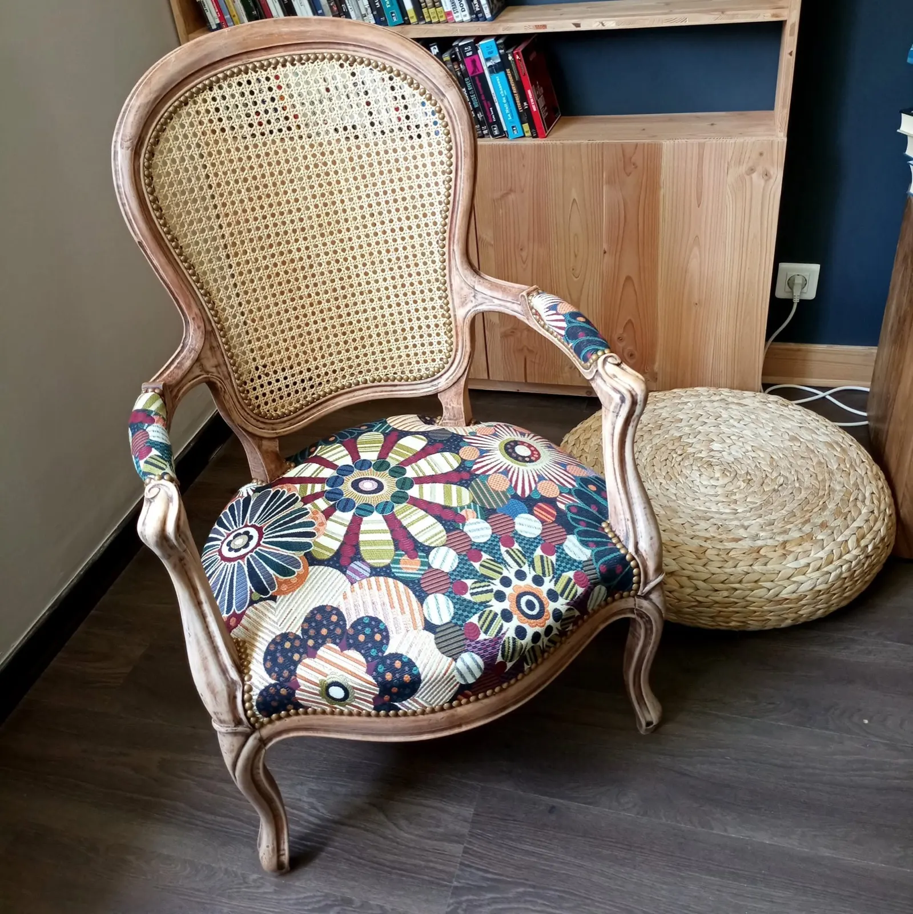
Charlotte reprend fauteuils, chaises et poufs, du Voltaire à la chaise des années 60, et leur donne un tissu à votre goût : velours framboise, wax, jacquard ou fleurs graphiques.
- Limoges8 rue Bossuet
- Réfectionde fauteuils, chaises et poufs
- Personnalisationle tissu qui vous ressemble
- 5,0 sur 57 avis sur Google
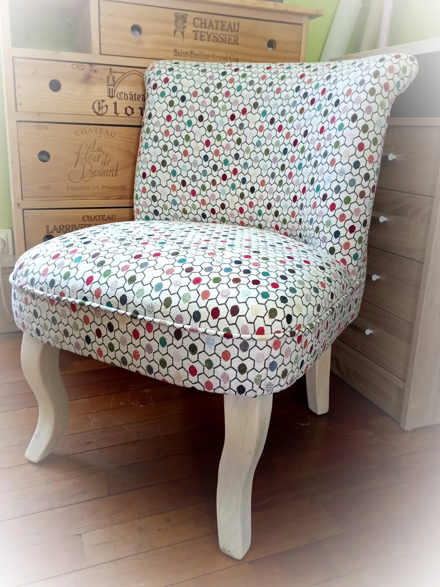
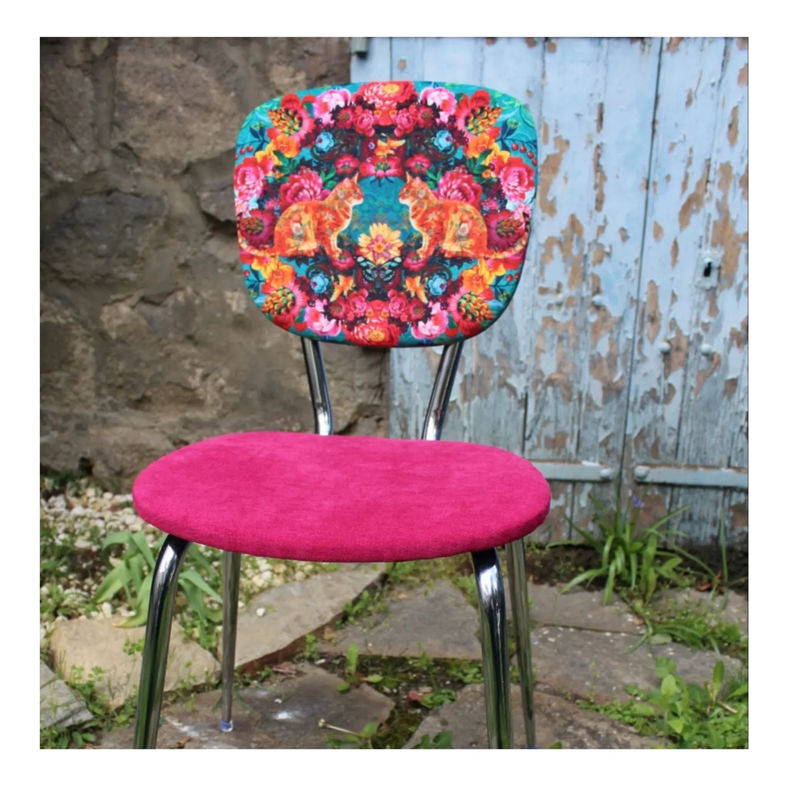
Un siège classique, un tissu qui ose.
Un crapaud en motifs géométriques, une chaise chromée en velours fuchsia, un Voltaire tout blanc : chez ChaMade, la réfection garde la forme du siège et la personnalisation lui donne du caractère. Charlotte raconte ses commandes sur sa page.
Fauteuil Bridge
Tissu jacquard fourni par la cliente, clous nickelés Artapisserie.fr, peinture velours « noir garçonne » Libéron.
Commande client
Changement de tissu haut en couleurs : tissu Thevenon, galon double corde Houlès.
Voltaire
Tout blanc… c'est la classe !
« Charlotte, à votre service pour vos projets de réfection et personnalisation de sièges. »
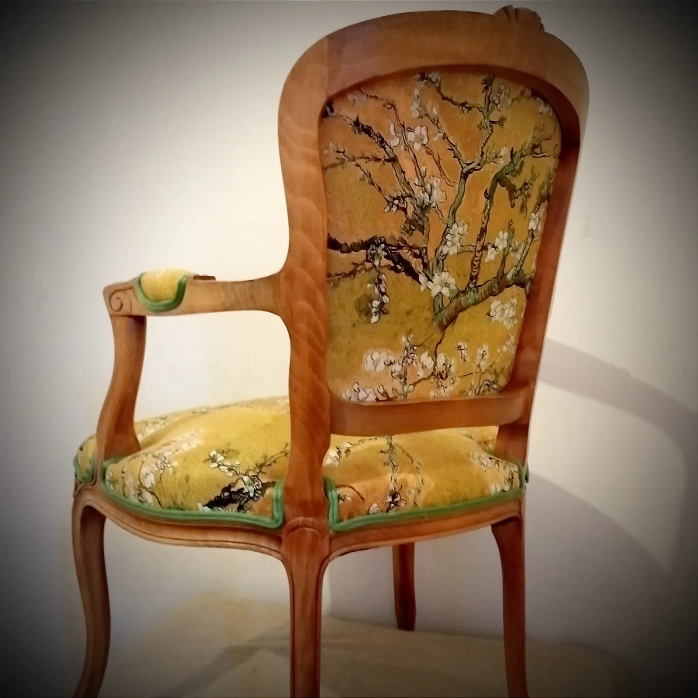
Du Voltaire à la chaise chromée des années 60.
Bois naturel, laqué noir ou blanc, cannage : chaque siège repart avec son tissu. Quelques pièces passées par l'atelier.
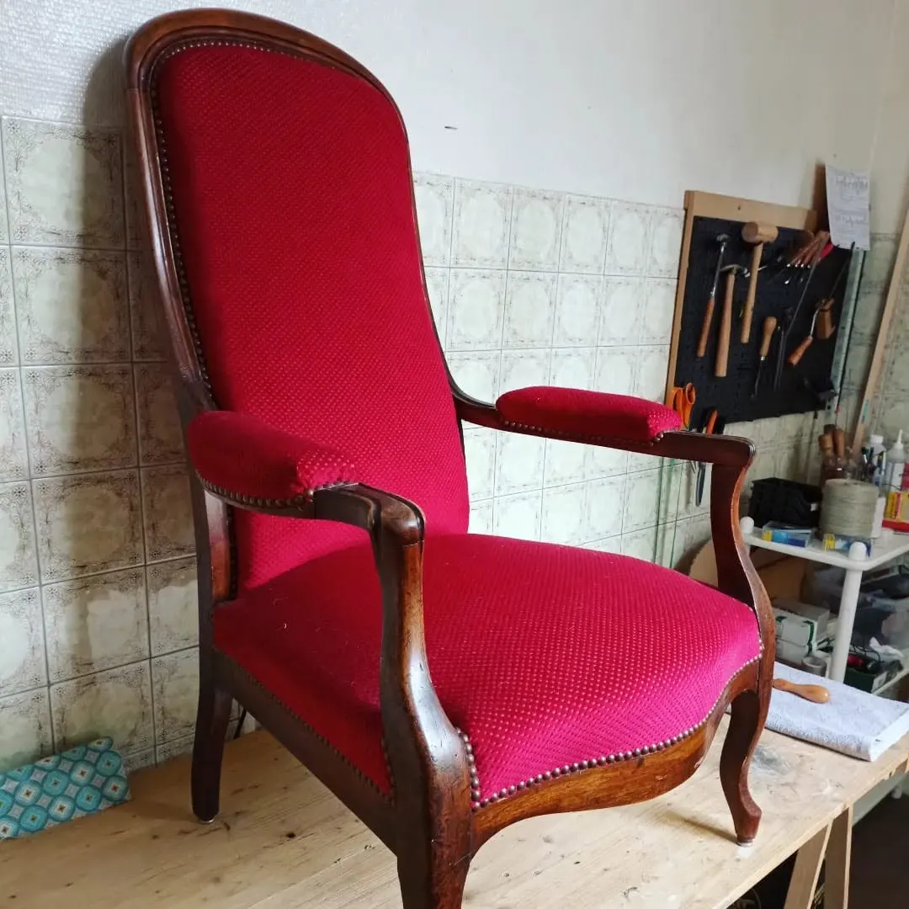
Voltaire, velours framboise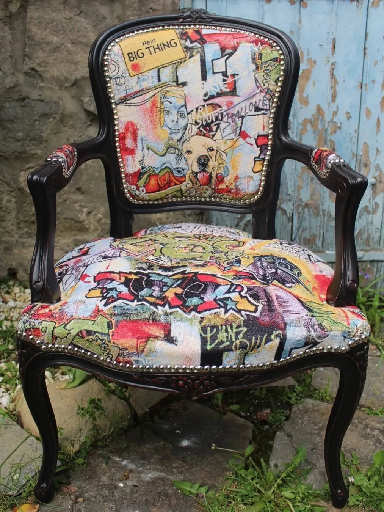
Louis XV laqué noir, tissu pop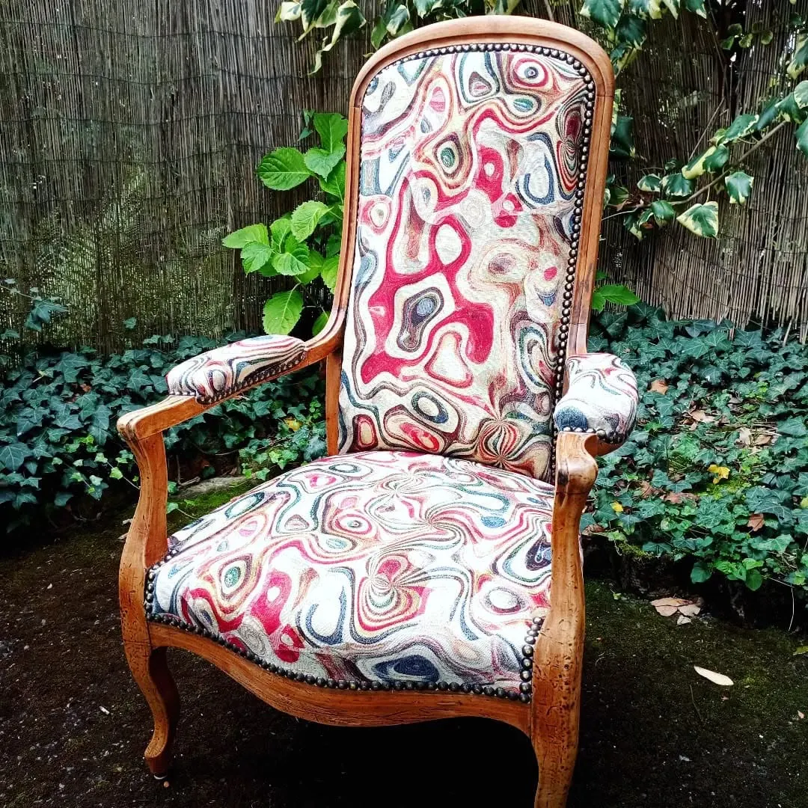
Voltaire, tissu marbré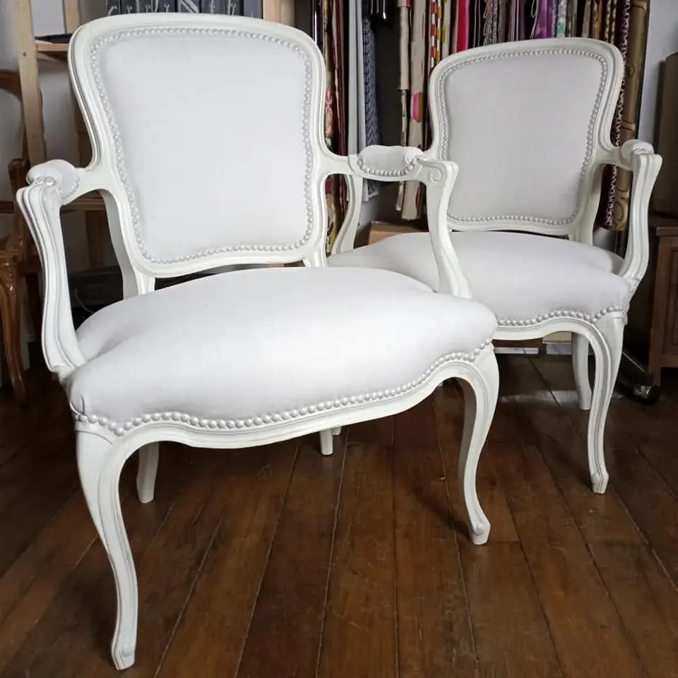
Paire de cabriolets laqués blancs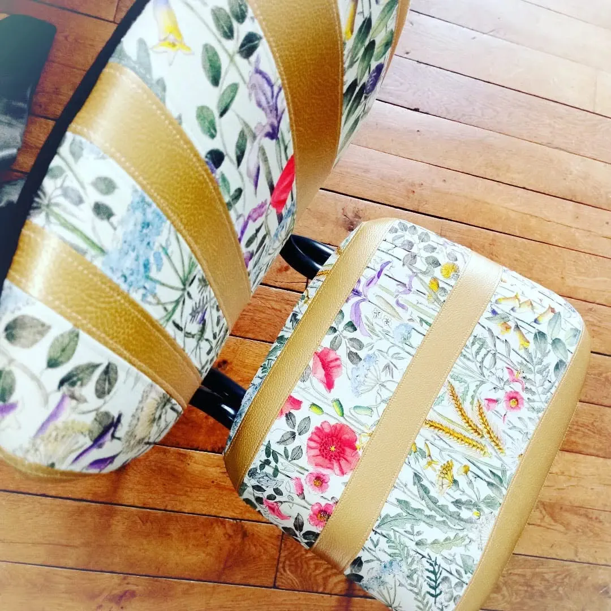
Poufs fleuris, bandes dorées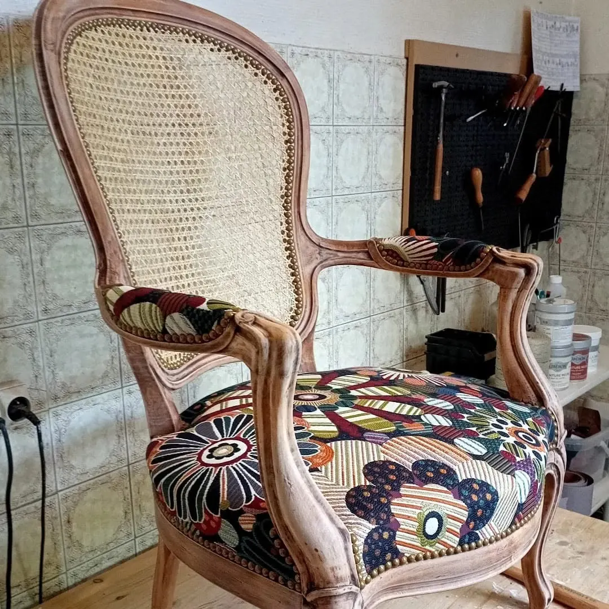
Cannage et wax à fleurs
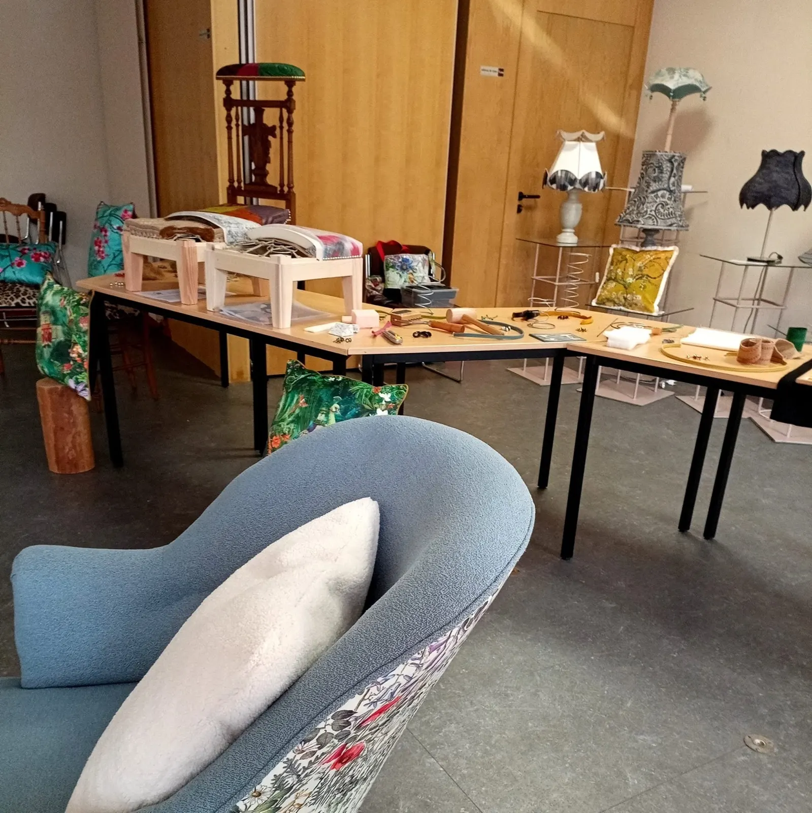
Un atelier, rue Bossuet.
ChaMade est au 8 rue Bossuet, à Limoges. Un appel à Charlotte, et votre siège trouve sa place sur l'établi.
Un siège à refaire ?
Appelez Charlotte, ou envoyez-lui une photo de votre fauteuil, de votre chaise ou de votre pouf par mail.
- Téléphone
- 06 13 25 75 10
- Adresse
- 8 rue Bossuet, 87100 Limoges
- Note Google
- 5,0 sur 57 avis · voir les avis
- Ses dernières pièces
- ChaMade sur Facebook